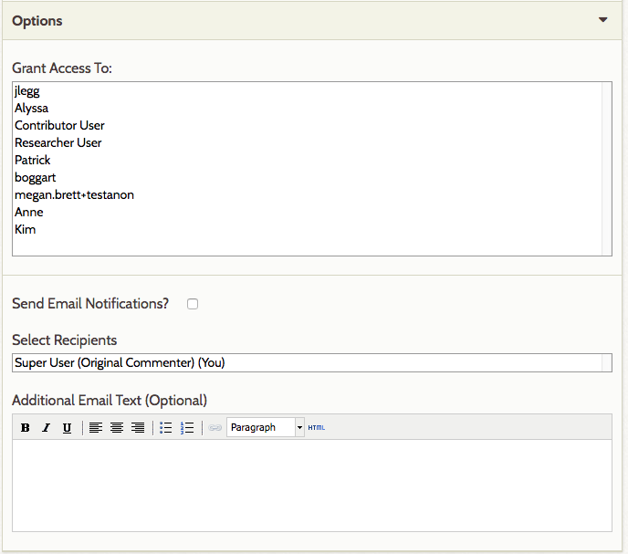
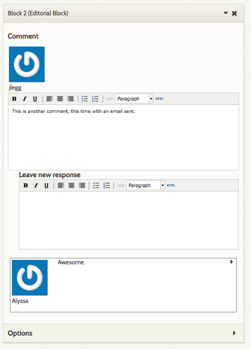
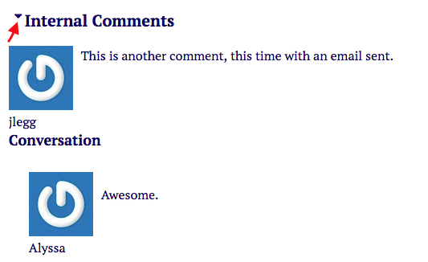

The Editorial Plugin adds a block to Exhibit Builder pages which allows users to add comments on and discuss in-progress exhibits. These comments are only visible to logged-in users of the site.
You must be using Exhibit Builder version 3.3.3 (not yet released, but is included in the master branch on GitHub) or higher for Editorial to work.
Editorial User Role
The plugin creates a new role, Exhibit-contributor, which largely functions like the Contributor role but can also edit Exhibits when added in the Editorial blocks (see below for more information)
An Exhibit-contributor can view, edit, add, and delete content in any exhibit to which they are added. This includes adding new exhibits, creating new pages, adding blocks to pages, and adding items to existing pages. Note: they will have access to all items in your Omeka collection.
Users with the Exhibit-contributor role cannot view the backend of exhibits to which they have not been added. They are also prohibited from editing items.
Using Editorial Blocks
Once you have installed and activated the Editorial plugin, it is ready to use.
From the Exhibits tab on the left-hand navigation of your admin dashboard, click Edit on the Exhibit for which you want to create an editorial block. Select the page on which you want to leave a comment or start a discussion.

Add an Editorial block
Navigate to an exisiting page or create a new page in your exhibit. In the Content section, the New Block layout options should now include an Editorial Block, with Omeka's logo for the block icon:

Click to select Editorial Block in the New Block options and click the long green Add New Content Block button.
Add the first comment in a block
The block will have your username and a text field for comments, which can be formatted using html. If your Omeka site email is also registered with Gravatar, then your Gravatar will show up above your username. Type your comment in the text field.

Once you have made your comment, you can either Save Changes to save it, or configure the following options before saving: - Grant Access To: set which users on the Omeka site can see and comment on this Editorial block. SuperUsers will always be able to see Editorial blocks. Other users must be added. - Use Grant Access to allow Exhibit-contributor users to view this exhibit. - Send Email Notifications: If checked, the plugin will send an email every time someone comments on this editorial block to recipients you select. - Selected Recipients: select recipients to be emailed about changes to the block. This will initially only have your username. As you grant access to users, their name will also appear in this select box. Use the command key while clicking to select more than one user. - Additional Email Text: this optional field allows you to add instructions or other text to the email.
Note: Multiple Editorial Blocks can be added to a single page, allowing for multiple comment chains.

Always remember to save changes.
Reply to someone's comment
If another user has made an Editorial block on an Exhibit page and granted access to you, you will see it on the edit page.
To reply to their comments, simply type in the Leave New Response field directly below their comment. Note that previous comments will show up below the Leave New Response field, not above it.

Editing and deleting comments
Currently users are unable to delete comments. However, it is possible to edit your own comments. Go to the comment you would like to edit, click the right-facing arrow to have the text box appear, make any needed fixes or updates, and save changes. Administrators and superusers are able to edit original comments but not responses to those comments.
Public side view
Although the content of Editorial blocks is not visible to non-logged in users, they do show up on the public side view when you are logged in:
Editorial block on the public side when the user is logged in:

The same page seen by a non-logged-in site visitor:

Click the small triangle button to the left of the label Internal Comments to expand or collapse the comment thread of a single Editorial block.
